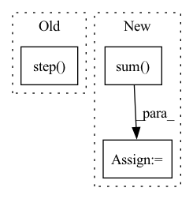

Pattern ID :22838
Before Change
def forward(self, g_s, f_s, g_t, f_t):
trans_loss_s, domain_acc_s = self._single_domain_forward(g_s, f_s, domain=1)
trans_loss_t, domain_acc_t = self._single_domain_forward(g_t, f_t, domain=0)
self.grl.step()
self.domain_discriminator_accuracy = 0.5 * (domain_acc_s + domain_acc_t)
return 0.5 * (trans_loss_s + trans_loss_t)
def _single_domain_forward(self, logits, features, domain=1):After Change
))
weight = 1.0 + torch.exp(-entropy(g))
batch_size = f.size(0)
weight = weight / torch.sum( weight) * batch_size
self.domain_discriminator_accuracy = binary_accuracy(d, d_label)
return self.bce(d, d_label, weight.view_as(d))
In pattern: SUPERPATTERN
Frequency: 3
Non-data size: 3
Instances Fragment ID: 72611863
Project Name: thuml/transfer-learning-library
Commit Name: 6dfc8e293ca2cbc4d116dc8ed0a6ef176dff0d06
Time: 2020-04-12
Author: 13126830206@163.com
File Name: dalib/adaptation/cdan.py
M Class Name: ConditionalDomainAdversarialLoss
N Class Name: ConditionalDomainAdversarialLoss
M Method Name: forward(5)
N Method Name: forward(5)
M Parent Class: nn.Module
N Parent Class: nn.Module
M File Name: dalib/adaptation/cdan.py
N File Name: dalib/adaptation/cdan.py
M Start Line: 86
M End Line: 90
N Start Line: 87
N End Line: 100
Before Change
def forward(self, g_s, f_s, g_t, f_t):
trans_loss_s, domain_acc_s = self._single_domain_forward(g_s, f_s, domain=1)
trans_loss_t, domain_acc_t = self._single_domain_forward(g_t, f_t, domain=0)
self.grl.step()
self.domain_discriminator_accuracy = 0.5 * (domain_acc_s + domain_acc_t)
return 0.5 * (trans_loss_s + trans_loss_t)
def _single_domain_forward(self, logits, features, domain=1):After Change
))
weight = 1.0 + torch.exp(-entropy(g))
batch_size = f.size(0)
weight = weight / torch.sum( weight) * batch_size
self.domain_discriminator_accuracy = binary_accuracy(d, d_label)
return self.bce(d, d_label, weight.view_as(d))
Fragment ID: 72611847
Project Name: thuml/transfer-learning-library
Commit Name: 8477111b23336e7dd2d349a4b35b969240ff5871
Time: 2020-04-12
Author: 13126830206@163.com
File Name: dalib/adaptation/cdan.py
M Class Name: ConditionalDomainAdversarialLoss
N Class Name: ConditionalDomainAdversarialLoss
M Method Name: forward(5)
N Method Name: forward(5)
M Parent Class: nn.Module
N Parent Class: nn.Module
M File Name: dalib/adaptation/cdan.py
N File Name: dalib/adaptation/cdan.py
M Start Line: 86
M End Line: 90
N Start Line: 87
N End Line: 100
Before Change
)
observations = self.env.reset()
while agents_history_maps.terminals_count < n_trajectories: // While not enough data in the buffer
decision_steps, terminal_steps = self.env.step()
actions = None
if len(decision_steps) > 0:
if np.random.random() < epsilon:
actions = self.agent.get_random_actions(len(decision_steps))After Change
else:
actions = self.agent.get_actions(observations, env=self.env)
observations, rewards, dones, truncated, infos = env_batch_step(self.env, actions)
terminals_count += np.sum( dones)
cumulative_rewards.append(np.sum(rewards).item())
if all(dones):
observations, info = self.env.reset()
Fragment ID: 72611860
Project Name: neurotorch/neurotorch
Commit Name: 50169293ea3e24c83ee9440eff1969ee00dd0628
Time: 2022-12-03
Author: 50332514+JeremieGince@users.noreply.github.com
File Name: src/neurotorch/rl/rl_academy.py
M Class Name: RLAcademy
N Class Name: RLAcademy
M Method Name: generate_trajectories(6)
N Method Name: generate_trajectories(6)
M Parent Class: Trainer
N Parent Class: Trainer
M File Name: src/neurotorch/rl/rl_academy.py
N File Name: src/neurotorch/rl/rl_academy.py
M Start Line: 253
M End Line: 276
N Start Line: 268
N End Line: 301